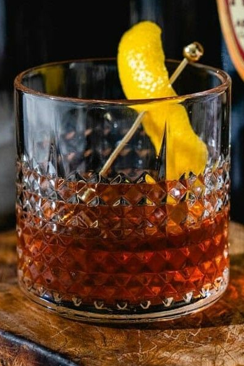

Sazerac

Ingredientes:
60 ml de whisky de centeio (preferencialmente)
1 cubo de açúcar
2 dashes de Peychaud's Bitters
1 dash de absinto ou licor de anis (opcional)
Casca de limão
Gelo
Modo de preparo:
Em um copo misturador, adicione o cubo de açúcar e um pouco de água.
Macere o açúcar até que esteja dissolvido.
Adicione o whisky de centeio e os dashes de Peychaud's Bitters no copo.
Encha o copo com gelo e mexa suavemente por cerca de 20 a 30 segundos para misturar bem e resfriar a bebida.
Em outro copo, adicione um pouco de absinto ou licor de anis e gire o copo para revestir as laterais.
Descarte o excesso de absinto ou licor de anis.
Coe o coquetel do copo misturador para o copo com absinto ou licor de anis.
Expresse o óleo da casca de limão sobre o coquetel, torcendo-a sobre a bebida para liberar os óleos cítricos.
Passe a casca de limão na borda do copo e coloque-a como guarnição.
Sirva imediatamente e aproveite o seu Sazerac!
O Sazerac é um coquetel clássico e robusto, conhecido por sua combinação de sabores ricos e complexos.
A escolha do whisky de centeio é tradicional, mas você também pode experimentar com outras variedades de whisky,
como bourbon. Aproveite seu Sazerac, um coquetel clássico com uma pitada de história!